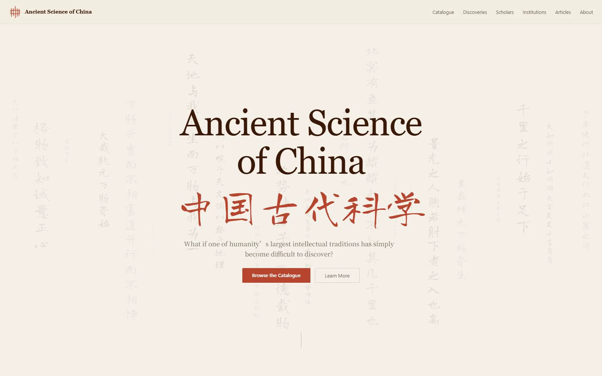
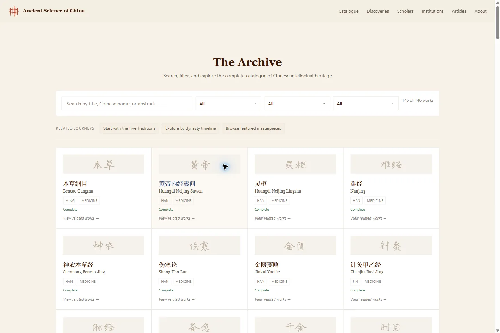
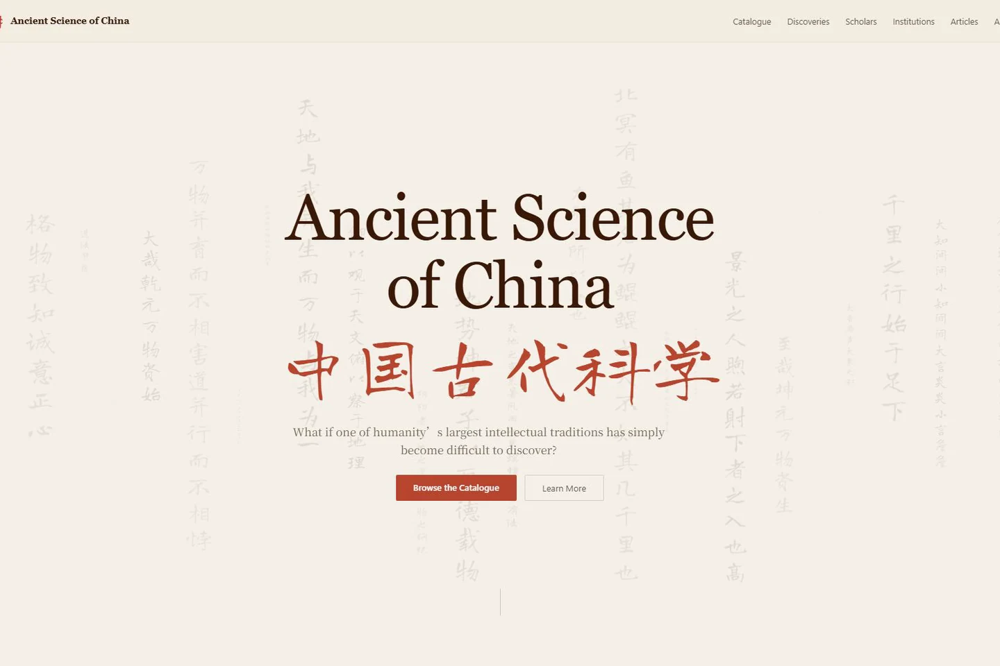
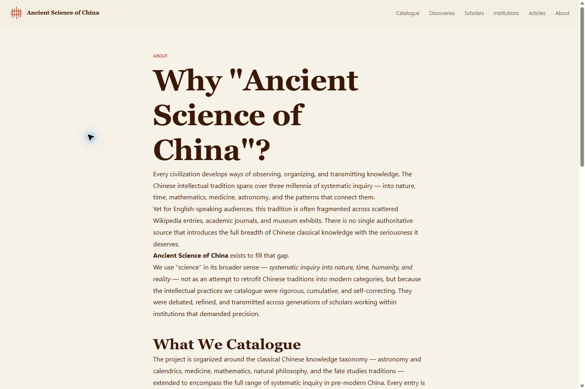

Cultural knowledge · Digital experience
Knowledge,
made discoverable.
An editorial identity and a clearer way to explore a cultural catalogue.

Ancient Science of China
Cultural knowledge · Digital experience
- Editorial identity
- UX/UI & catalogue
An extensive subject.
A considered structure.
Goal
Make the existing knowledge collection easier to navigate.
Solution
Organise the catalogue through clear categories, bilingual typography and a restrained editorial system.
Paper. Ink. A sense of continuity.
Context
An editorial pace for reading.
Structure
Clear entry points into the catalogue.
Identity
Original cinnabar mark and calligraphy.
The palette
- Paper#F4EEE1 · Identity ground
- Homepage paper#F6F1E8 · Digital surface
- Ink#3B1907 · Text
- Cinnabar#B8452E · Mark / accent
- Bronze#8B7355 · Supporting colour

The work


The mark
Notes
Visual and interface scope shown from the correct website. Founding mandate and the detailed collaboration story remain to be confirmed. The rejected asoc-web project is excluded.
Have a similar business problem?
Bring us the problem.
You do not need to know which service you need. Start with the problem, or run the free audit and let the evidence choose the next step.